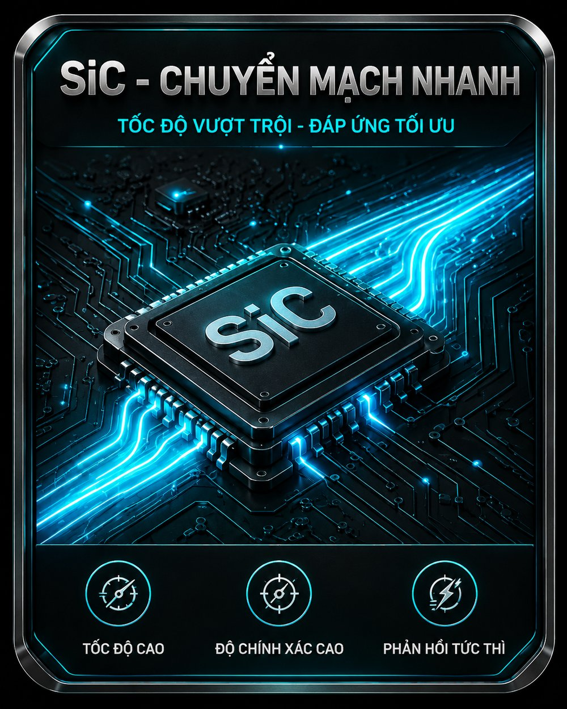
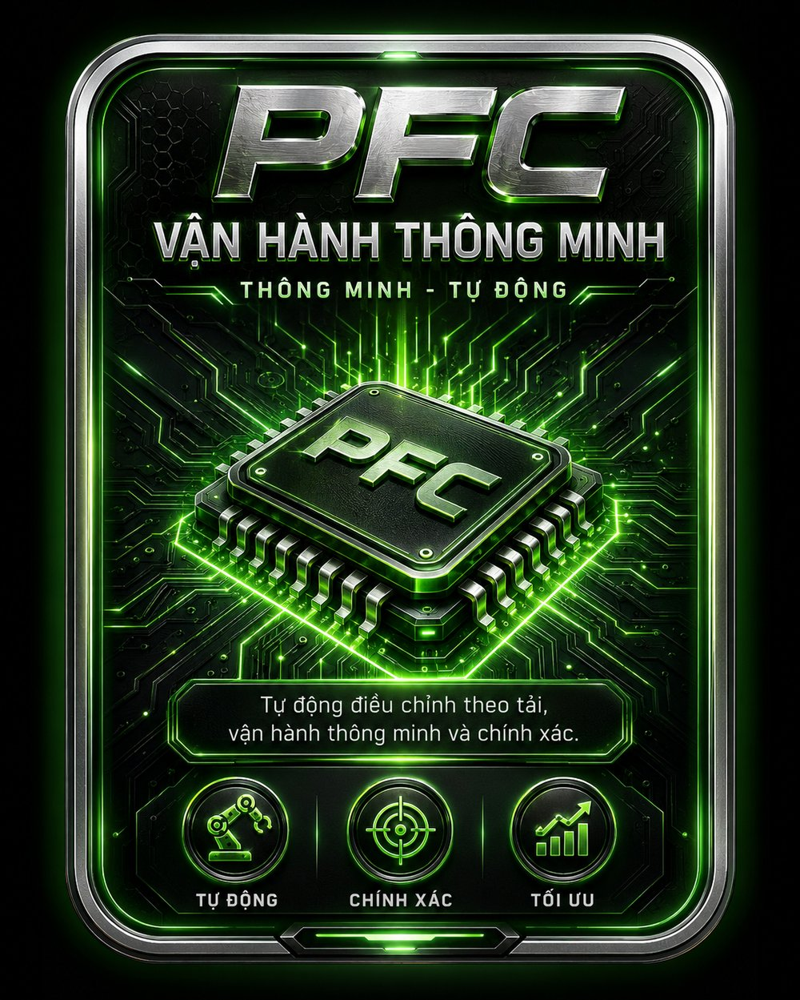
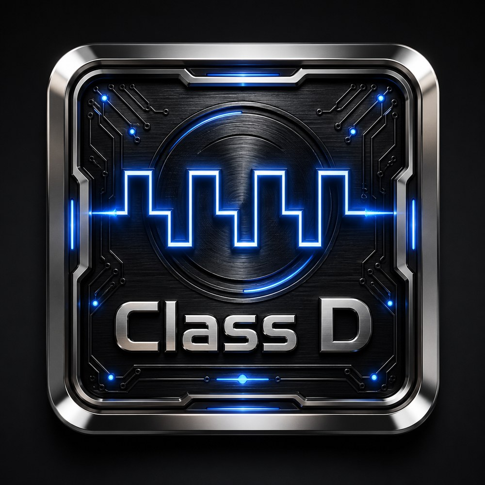

KORAH được xây dựng trên bốn trụ cột công nghệ: Silicon Carbide SiC, PFC Power Supply, Class D High Efficiency và Bảo vệ thông minh — tất cả do chính đội ngũ kỹ sư AMMY nghiên cứu, phát triển và sản xuất tại Việt Nam.
Toàn bộ sản phẩm KORAH được chính đội ngũ kỹ sư AMMY nghiên cứu, phát triển, sản xuất và lắp ráp tại Việt Nam. AMMY làm chủ công nghệ từ gốc — không nhập nguyên chiếc dán nhãn, không lệ thuộc nhà cung cấp nước ngoài. Chính năng lực tự chủ này bảo đảm cho công tác hậu mãi, bảo trì và cung ứng linh kiện lâu dài xuyên suốt vòng đời sản phẩm.
Mỗi bo mạch KORAH tích hợp đồng thời cả bốn công nghệ nền tảng, tối ưu hóa hiệu suất ở mọi điều kiện vận hành từ studio đến sân khấu ngoài trời.

Silicon Carbide (SiC) là vật liệu bán dẫn thế hệ thứ ba thuộc nhóm "dải cấm rộng" (Wide Bandgap). Khác với Silicon (Si) truyền thống, SiC cần nhiều năng lượng hơn để dẫn điện — chính đặc tính này mang lại khả năng chịu điện áp cao, nhiệt độ cao và tần số chuyển mạch cao vượt trội.
KORAH sử dụng MOSFET SiC từ Onsemi (Hoa Kỳ) — một trong những nhà sản xuất bán dẫn SiC hàng đầu thế giới — trên các model cao cấp K19PRO, K20S và K20PLUS.

PFC (Power Factor Correction — Hiệu chỉnh hệ số công suất) là công nghệ giúp thiết bị "kéo" dòng điện từ lưới một cách nhịp nhàng theo điện áp, thay vì giật cục ở đỉnh sóng. Nói cách khác, PFC làm cho bộ nguồn của cục đẩy "trông giống" một tải thuần trở lý tưởng đối với lưới điện.
Toàn bộ cục đẩy KORAH đều tích hợp nguồn PFC. Các model như K16PRO, K19PRO hoạt động hiệu quả trong dải rộng 140V–270V, K19S ổn định ở 140V–240V — đặc biệt phù hợp điều kiện điện lưới Việt Nam.

Class D là kiểu mạch khuếch đại dùng chuyển mạch tốc độ cao (đóng/mở liên tục) thay vì khuếch đại tuyến tính như Class AB truyền thống. Nhờ vậy, phần lớn năng lượng biến thành âm thanh thay vì thất thoát dưới dạng nhiệt.
Kết hợp Class D với MOSFET SiC, cục đẩy KORAH đạt hiệu suất cao hơn nữa, tỏa nhiệt ít hơn — nền tảng cho những model công suất lớn nhưng vẫn gọn nhẹ và tin cậy.